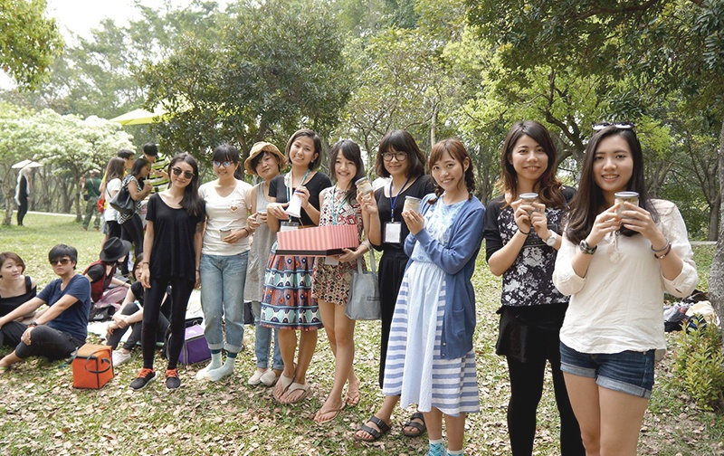
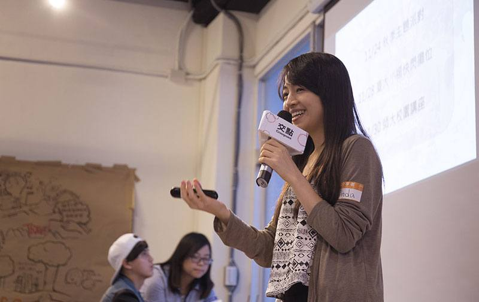

About Us
關於全植食尚
全植食尚的創立起源於三個女孩的小小夢想。Linda 因為個人健康因素開始探索食物背後的故事，在探索的過程中認識了 Vegan 的理念，Vegan 不僅僅是不食用動物性產品的飲食選擇，更是一種對生活的深度反思。在了解到肉食主義對於動物造成的迫害：極端的拘禁、不上麻藥的固定閹割和截肢、殘暴宰殺以及畜牧業對於環境造成的傷害後，Linda 與好姊妹 Anne, Leslie 一同創立了「全植食尚」這個品牌。
三人希望透過食譜分享、飲食講座以及創意有趣的異國風味廚藝課程讓大家知道全植物性飲食其實不無聊，各季蔬菜的新鮮滋味、五花八門的芬芳香料、堅果種子為身體灌注的能量、自然原味帶來的清爽感受... 成為 Vegan 後，味覺的滿足感沒有變少，更多的是精神層面的愉悅自適！
「每一次你花的錢，都是在為你想要的世界投票。」真心期盼能透過我們的分享，讓握有決定權的你認識一個對健康、對動物、對環境都更友善的生活方式！

相關報導
— 可能性 Possibility - 2016/8/18
 — Hahow專訪 - 2016/8/13
— Hahow專訪 - 2016/8/13- 


- 